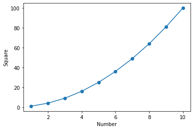
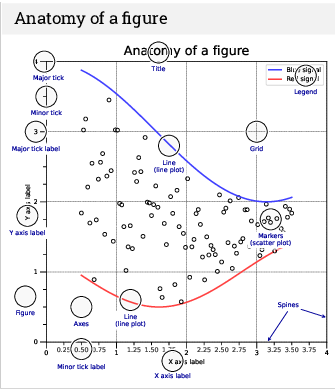
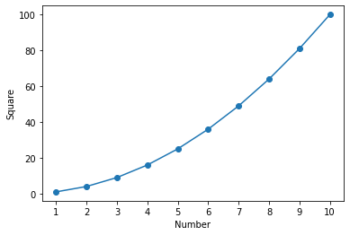
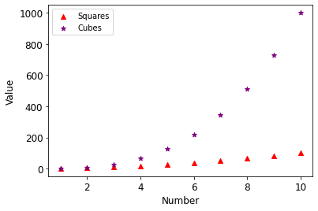
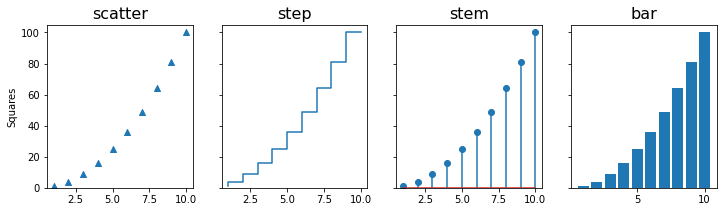
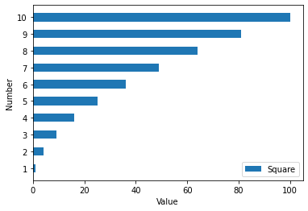
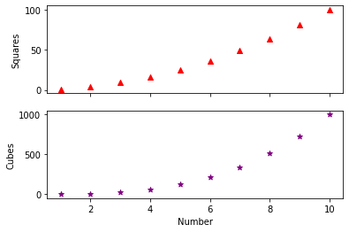
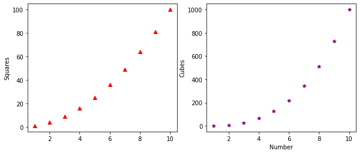
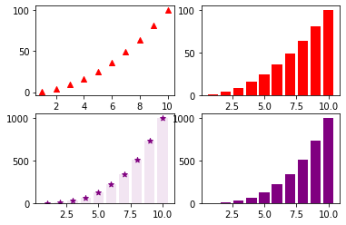
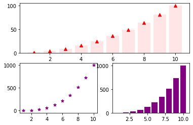

import matplotlib.pyplot as plt11 Matplotlib
Matplotlib is a Python library for data visualization. It offers variety of functions to plot different types of graphs which can be customised to create high quality figures. The pyplot function in this library is used for instantiating a matplotlib graph object. The plot function draws a line plot given two sequences of equal length. The get the scatter plot use scatter. Properties such as line-width, line-color, marker-type, etc. can be easily customized using the appropriate keyword arguments. The pyplot object also has functions for decorating the plots with axis-labels, title, text, legend, etc. The show function renders the plot.
x = range(1,11)
y = [a**2 for a in x]
plt.plot(x,y) #line plot
plt.scatter(x,y) #scatter plot
plt.xlabel("Number")
plt.ylabel("Square")
plt.show()
The image below shows the different customizable elements in a matplotlib figure. These elements are accessible via different function available for the pyplot object or the axes object. The axes object is accessible through the gca function for the pyplot object. As shown above the axes label can be changed using the xlabel and ylabel for the pyplot object.
Image source - https://matplotlib.org. 
To change the x-axis ticks there is no direct way to do this using the pyplot object. So we need to create an axes object to modify x-ticks. The set_ticks function available for the axes.xaxis object can ge used to specify a list having locations for xticks.
x = range(1,11)
y = [a**2 for a in x]
plt.plot(x,y) #line plot
plt.scatter(x,y) #scatter plot
plt.xlabel("Number")
plt.ylabel("Square")
ax = plt.gca()
ax.xaxis.set_ticks(range(1,11))
plt.show()
We can also have multiple plots in one graph i.e. different plots sharing the same axes.
x = range(1,11)
y = [a**2 for a in x]
z = [a**3 for a in x]
plt.scatter(x,y,marker="^", color="red")
plt.scatter(x,z,marker="*", color="purple")
plt.xlabel("Number", fontsize=12)
plt.ylabel("Value", fontsize=12)
plt.xticks(fontsize=12)
plt.yticks(fontsize=12)
plt.legend(["Squares","Cubes"])
plt.show()
Matplotlib has a variety of in-built graph types that can be used to display information as required. Below are examples of some of the plots available in matplotlib. The title of these plots represent the corresponding function avaiable for the pyplot object.

Quiz: Write a program to make a graph as shown below.

Show answer
y = [a**2 for a in x]
plt.barh(x,y, height=0.5)
plt.xlabel("Value")
plt.ylabel("Number")
plt.yticks(range(1,11))
plt.legend(["Square"], loc="lower right")
plt.show()11.1 subplots
Many a time we need to plot multiple graphs in one figure for effecient visual analysis. In Matplotlib terminilogy these plots are refered to as subplots. The pyplot class has subplots function that return a figure and and axes object. These can be used to access and manipulated different elements of the graph. In addition, subplots can take as argument the total number of plots to create a figure. This function has a keyword argument figsize to specify the size of the plot.
x = range(1,11)
y = [a**2 for a in x]
z = [a**3 for a in x]
fig, ax = plt.subplots(2,1,sharex=True) #two rows and one column
ax[0].scatter(x,y,marker="^", color="red")
ax[1].scatter(x,z,marker="*", color="purple")
ax[1].set_xlabel("Number")
ax[0].set_ylabel("Squares")
ax[1].set_ylabel("Cubes")
plt.show()
The subplots in the above figure can be stacked horizontally by changing the subplots statement to plt.subplots(1,2).

Similarly, we can create different arrangements for subplots and save an image using savefig function of the figure object. The resolution of the resulting image can be controlled using the dpi argument. The alphaargument in the code below is used to make the bars transparent.
x = range(1,11)
y = [a**2 for a in x]
z = [a**3 for a in x]
fig, ax = plt.subplots(2,2) #create subplots with two rows and two columns
ax[0,0].scatter(x,y,marker="^", color="red")
ax[0,1].bar(x,y,color="red")
ax[1,0].scatter(x,z,marker="*", color="purple")
ax[1,0].bar(x,z,color="purple",alpha=0.1)
ax[1,1].bar(x,z,color="purple")
fig.savefig("subplot.png", dpi=300)
plt.show()
11.2 subplot (without ‘s’)
The subplot() function is similar to subplots with a difference that it take an additional argument - index. This can be used to make axes span multiple columns within the subplot.
x = range(1,11)
y = [a**2 for a in x]
z = [a**3 for a in x]
ax1 = plt.subplot(2,1,1)
ax2 = plt.subplot(2,2,3)
ax3 = plt.subplot(2,2,4)
ax1.scatter(x,y,marker="^", color="red")
ax1.bar(x,y, color="red",alpha=0.1)
ax2.scatter(x,z,marker="*", color="purple")
ax3.bar(x,z,color="purple")
plt.savefig("subplots2.png",dpi=300)
plt.show()